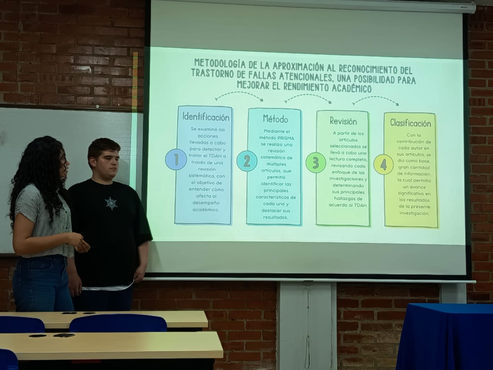
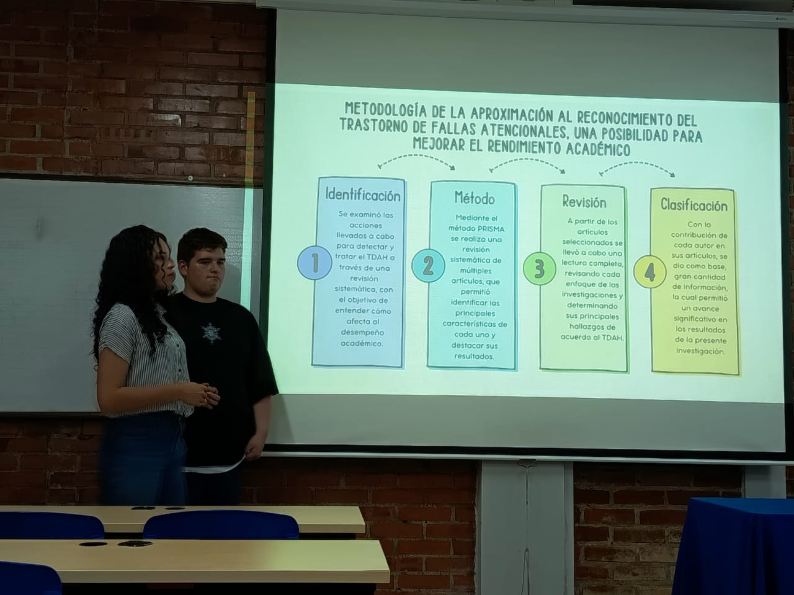
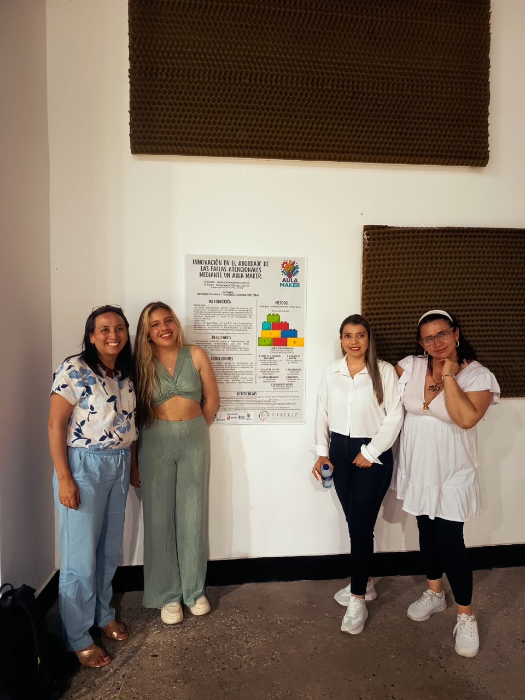

Semillero X MAKER
Espacio academico para observacion, experimentacion, produccion de contenidos y fortalecimiento de habilidades investigativas.
X MAKER es un semillero orientado al desarrollo de proyectos formativos con enfoque cientifico, creativo y academico. Integra prototipado, analisis educativo, socializacion de resultados y cultura maker como parte de una misma experiencia institucional.
Espacio academico para observacion, experimentacion, produccion de contenidos y fortalecimiento de habilidades investigativas.
Presentacion institucional
El semillero organiza su trabajo mediante proyectos aplicados y procesos de socializacion academica.
Construccion, evaluacion y mejora de propuestas experimentales con enfoque STEM.
Analisis de problemáticas escolares y temas relacionados con la atencion y el aprendizaje.
Socializacion de evidencias, ponencias, informes y productos desarrollados por el semillero.
Semillero de investigacion
Concurso institucional
El Festival de Cohetes X MAKER 2026 es una actividad academica orientada a promover creatividad, trabajo en equipo y experimentacion a traves del diseño y lanzamiento de cohetes de agua. Esta vista funciona como la pagina oficial del concurso y reune la descripcion del evento, sus categorias, el registro y la logica general de participacion.
El proceso de inscripcion al Festival de Cohetes X MAKER 2026 se realizara mediante el formulario oficial dispuesto por la organizacion del evento.
Estructura del concurso
Difusion de fechas, reglamento, requisitos, categorias y condiciones generales para la participacion estudiantil.
Jornada de presentacion, revision de prototipos, lanzamientos, medicion de resultados y evaluacion por criterios.
Divulgacion de resultados, reconocimiento a participantes y fortalecimiento de la cultura investigativa institucional.
Categorias sugeridas
| Categoria | Descripcion |
|---|---|
| Mayor alcance | Reconoce el cohete que logre mejor distancia o altura segun el criterio definido por la organizacion. |
| Mejor diseño | Evalua creatividad, acabado del prototipo, identidad visual y presentacion general del equipo. |
| Innovacion | Destaca propuestas con mejoras tecnicas y planteamientos originales en su construccion. |
El festival permite articular fisica, diseño experimental, trabajo colaborativo, creatividad y comunicacion academica dentro de una experiencia visible para la institucion.
Esta iniciativa ayuda a consolidar una identidad propia para X MAKER, fortaleciendo su portafolio de actividades, muestras institucionales y futuras convocatorias.
Investigacion educativa
Esta linea del semillero examina las fallas atencionales desde una perspectiva educativa e investigativa, buscando comprender su relacion con los procesos de aprendizaje, la participacion escolar, el rendimiento academico y las estrategias pedagogicas de apoyo dentro del contexto institucional.
Analizar las fallas atencionales como fenomeno relevante en el contexto escolar para aportar comprension academica y orientaciones que favorezcan la inclusion, la permanencia y el aprendizaje.
Revision documental, analisis de antecedentes, formulacion de categorias de estudio y elaboracion de interpretaciones desde una perspectiva pedagogica e investigativa.
Las fallas atencionales pueden afectar comprension, concentracion, participacion en clase y cumplimiento de actividades academicas.
La investigacion se orienta a estudiantes y contextos escolares donde se observan dificultades asociadas a la atencion sostenida.
Orientaciones pedagogicas, insumos de socializacion y conclusiones que aporten al mejoramiento del rendimiento academico.
| Fase | Descripcion |
|---|---|
| Revision teorica | Consulta de conceptos, antecedentes y fundamentos sobre fallas atencionales en el ambito educativo. |
| Analisis | Identificacion de retos, necesidades, factores asociados y posibilidades de acompañamiento dentro del aula. |
| Produccion academica | Construccion de conclusiones, orientaciones y materiales de socializacion. |
Esta linea fortalece la mirada del semillero hacia problemáticas reales del aula y conecta la investigacion con necesidades concretas de la comunidad educativa.
Los resultados pueden convertirse en ponencias, socializaciones institucionales, posters academicos o materiales de orientacion pedagógica.
Proyecto de ponencias
Experiencia MakerLab reune ponencias y socializaciones realizadas por integrantes del semillero X MAKER.
Presentacion orientada a compartir una experiencia academica vinculada al trabajo del semillero, con enfasis en participacion estudiantil y socializacion de resultados.
Presentacion enfocada en la experiencia MakerLab como escenario de exposicion de ideas, construccion de conocimiento y fortalecimiento de la comunicacion academica.
Galeria

Material grafico asociado a la experiencia de ponencias y socializacion del semillero.

Escena vinculada al desarrollo de actividades academicas y participacion estudiantil.

Apoyo visual para documentar momentos relevantes del proyecto MakerLab.

Imagen destinada a reforzar la memoria visual y academica del semillero.
Documentos
Documento en formato Word disponible para consulta o descarga del contenido asociado a la ponencia.
Descargar archivo WordDocumento en formato Word destinado al desarrollo de la experiencia de socializacion academica.
Descargar archivo WordArchivo PDF con contenido academico relacionado con el trabajo desarrollado en esta linea.
Descargar PDFFormato PDF de apoyo para la preparacion y organizacion de ponencias academicas.
Descargar PDFDirectorio
Shirley Ovalle
Jesus Parra
Cristian Gomez